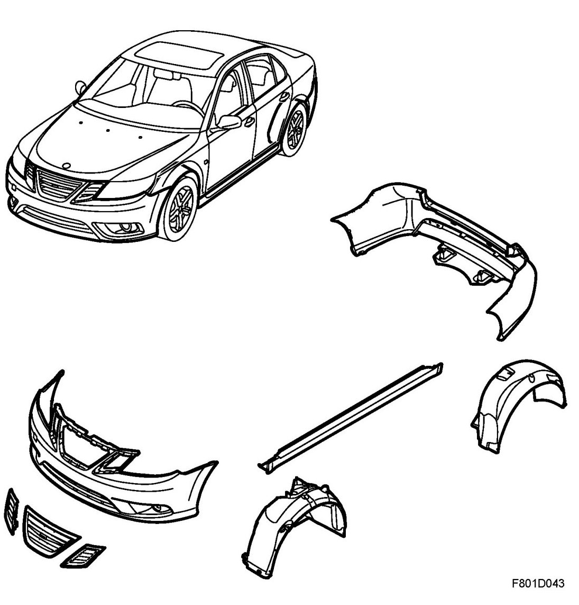
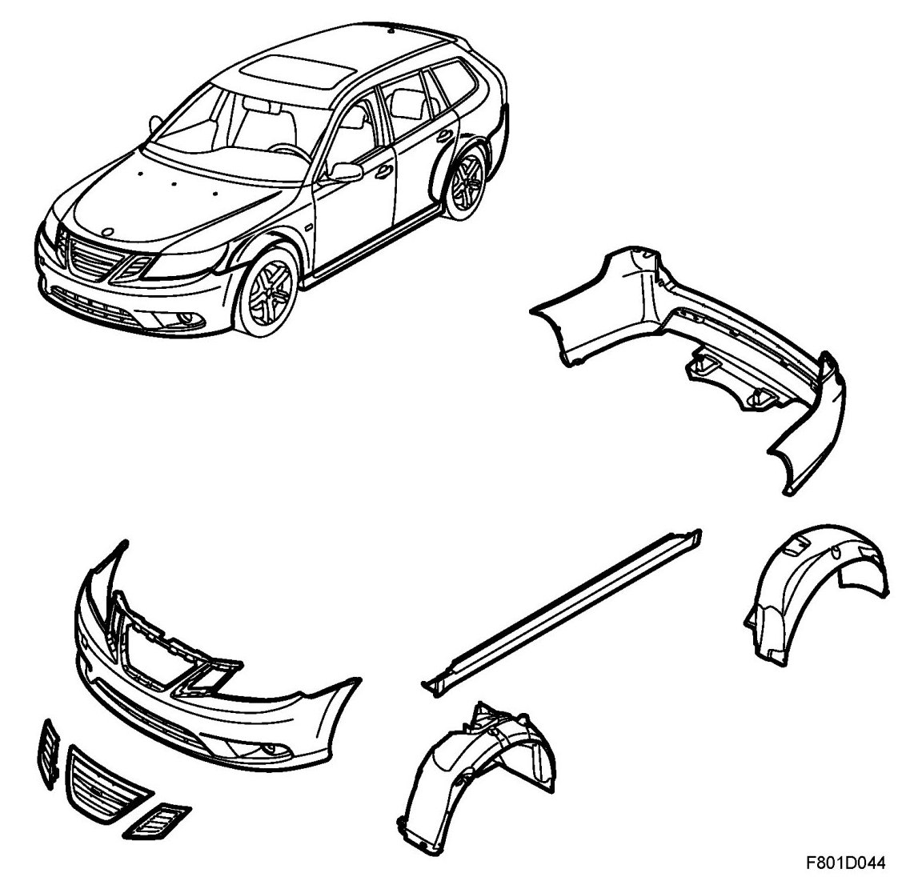
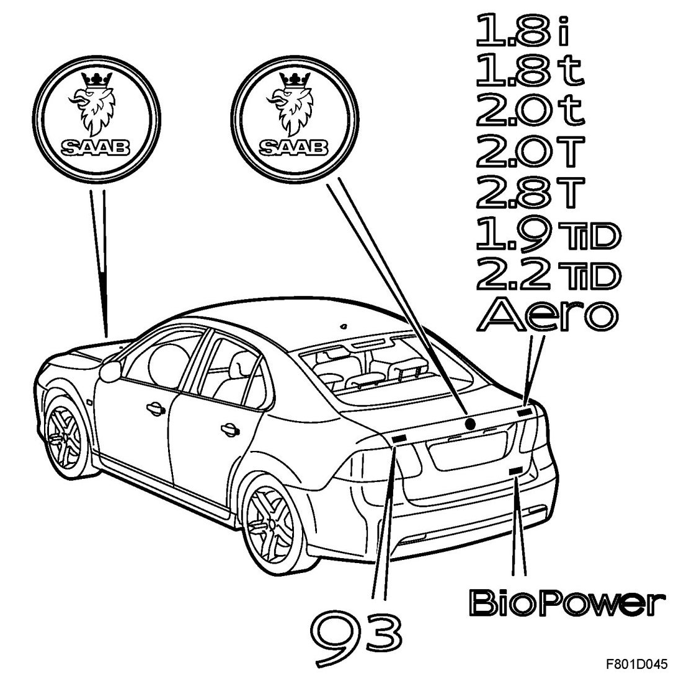

Brief Description
Brief Description

5D

Front bumper shell
The front bumper consists of a cellular plastic core and a painted plastic shell with integrated grille. The painted shell houses the covers of the headlight washer jets. The bottom of the bumper shell is black on Linear and Arc and the same colour as the body on Vector and Aero. The bumper is mounted on holders in the wings and is screwed into the wing liners and holders. The top section with integrated grille is secured to the body with clips.
Rear bumper shell, 4D, CV
The rear bumper consists of an aluminium rail, a cellular plastic core and a painted plastic shell with integrated corner guards. The shell contains a black protective moulding that can be removed in three pieces, two outer and one centre. The centre moulding houses the SPA distance sensors. The bottom of the bumper shell is black on Linear and Arc and the same colour as the body on Vector and Aero. The bottom of the Aero variant also has a cavity for the exhaust pipe. The bumper is mounted on holders in the body and is secured to the underside of the body and the wing liners.
Rear bumper shell, 5D
The rear bumper consists of an aluminium rail, a cellular plastic core and a painted plastic shell with integrated corner guards. The shell contains two black removable protective mouldings. The centre part of the bumper shell houses the SPA distance sensors in a protective casing. The bumper is mounted on holders in the body and is secured to the underside of the body and the wing liners.
Front spoiler
The spoiler is secured with catches in the bumper shell. A sport variant is also available as an accessory.
Spoiler, rear, 4D
A lower spoiler is fitted as standard, secured with catches in the bumper shell. A rear spoiler mounted to the boot lid is also available as an accessory.
Spoiler, rear, 5D
A lower spoiler is fitted as standard, secured with catches in the bumper shell. There is also an upper spoiler screwed to the upper part of the tailgate.
Grille
The grille is integrated in the front bumper. The grille has three removable sections.
Protective mouldings
Plastic protective mouldings are located on the sides of the doors. These are secured to the body with clips.
Front and rear wing liners
The front and rear wing liners are made of plastic and protect the body from dirt and stones that are cast up. The wing liners are secured to the body.
Emblem
The emblems on the bonnet and boot lid are secured with double-sided tape.
